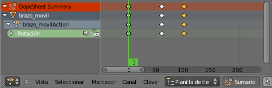

Un ciclo
La animación
La animación es muy sencilla en este caso.
- Seleccionamos brazo_movil y en el fotograma 1 le creamos un keyframe ("I") de Rotación.
- Nos desplazamos al fotograma 60.
- Rotamos ("R") brazo_movil hasta su tope de 60º. Es ahora cuando nos beneficiamos de la opción A transformaciones que activamos en la restricción Limitar rotación. Gracias a ella el valor numérico de la rotación no pasará de 60.
- Le creamos un segundo keyframe ("I") de Rotación.
Nos vamos al entorno de trabajo Animation para gestionar los keyframes. En el editor Planilla de tiempos  seleccionamos el primero...
seleccionamos el primero...
...lo duplicamos ("Shift_D") y desplazamos para que se repita la primera posición. Al colocar el duplicado lo hacemos en el fotograma 100 se consigue que el desplazamiento de subida del brazo sea más rápido que el de bajada otorgándole al movimiento una sensación de que el brazo ejerce más fuerza al bajar que al subir.
Sólo queda preparar el render de la animación con 99 fotogramas (ni uno más ni uno menos). Sólo de ese modo podremos más adelante empalmar varias veces la misma animación sin que se produzcan errores visuales.